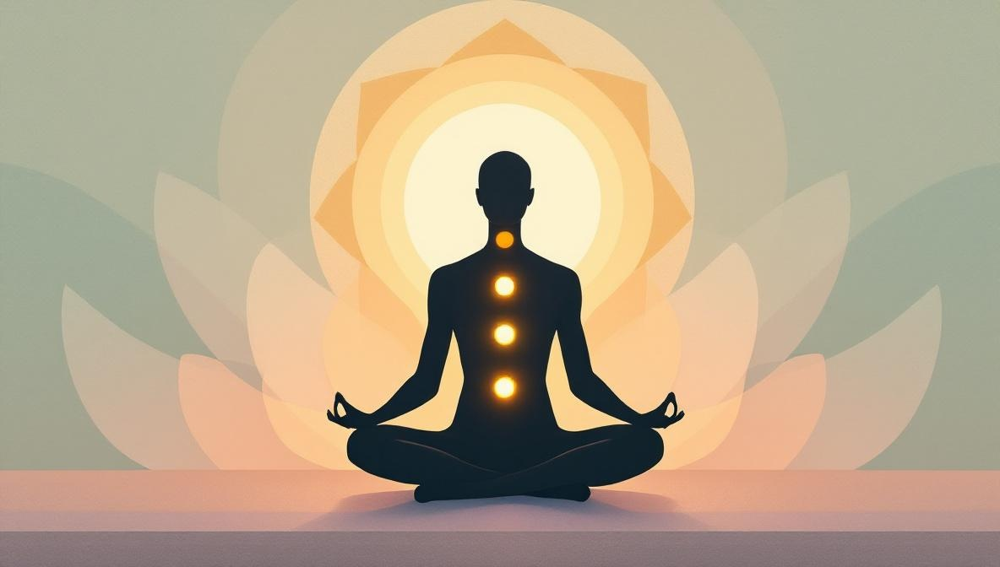
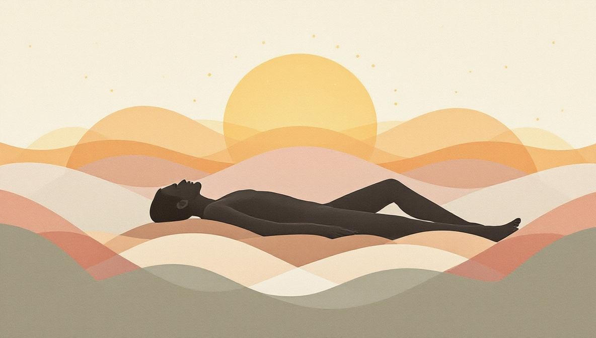

La risposta breve
Il Reiki e una pratica di guarigione energetica con imposizione delle mani in cui un praticante formato canalizza l'energia vitale universale per supportare la capacita naturale del tuo corpo di rilassarsi, rilasciare la tensione e ritrovare l'equilibrio. La parola stessa viene da due parole giapponesi: rei (universale) e ki (energia vitale).
E stato sviluppato in Giappone nel 1922 da Mikao Usui e da allora si e diffuso in ogni continente, con centinaia di migliaia di praticanti nel mondo. Il Reiki non e massaggio, non e psicoterapia e non e medicina. E una pratica complementare — qualcosa che le persone usano accanto alle cure convenzionali, non al loro posto.
Durante una sessione, il praticante posiziona le mani leggermente sopra o appena al di sopra di aree specifiche del tuo corpo. Rimani completamente vestito, sdraiato su un lettino o seduto su una sedia. La maggior parte delle persone descrive l'esperienza come profondamente calmante — come la sensazione di scivolare nel sonno pur restando consapevoli.

Come funziona davvero una sessione di Reiki
Che sia in presenza o online, una sessione di Reiki segue una struttura prevedibile. Sapere cosa aspettarsi elimina gran parte dell'incertezza.
1. Breve conversazione. La sessione inizia con un breve confronto. Il praticante chiede come ti senti, se hai preoccupazioni specifiche (stress, dolore, pesantezza emotiva) e su cosa vorresti concentrarti. Non e psicoterapia — e orientamento.
2. Ti sdrai o ti siedi comodamente. Per le sessioni in presenza, ti sdrai completamente vestito su un lettino imbottito, spesso con una coperta. Per le sessioni a distanza, trovi un posto tranquillo a casa — divano, letto, cuscino a terra — qualsiasi cosa ti permetta di chiudere gli occhi e rilassarti.
3. Il praticante lavora attraverso posizioni delle mani. In presenza, posiziona le mani leggermente sopra o appena al di sopra di testa, spalle, petto, addome e gambe — una sequenza standard che copre i principali centri energetici del corpo. In una sessione a distanza, lavora sulle stesse posizioni energeticamente, guidandoti con la voce.
4. Riposi. Il tuo unico compito e respirare e ricevere. La maggior parte delle persone chiude gli occhi. Alcuni si addormentano — e va benissimo cosi.
5. Chiusura e confronto. Il praticante segnala dolcemente la fine della sessione. Segue una breve conversazione su cosa hai notato (sensazioni, emozioni, immagini) e suggerimenti di cura personale per il giorno o i due giorni successivi — bevi acqua, riposati se necessario, fai attenzione ai tuoi sogni.
A chi e rivolto il Reiki?
Il Reiki attrae un'ampia gamma di persone, ma funziona meglio per chi si avvicina con aspettative realistiche. Ecco chi tende a beneficiarne di piu.
Il Reiki fa per te se:
- Porti con te stress o tensione cronica e vuoi una pratica che aiuti il tuo sistema nervoso a calmarsi — non solo la mente.
- Stai attraversando un periodo difficile — lutto, transizione, burnout — e vuoi qualcosa di delicato accanto a qualsiasi altra cosa tu stia facendo (terapia, cure mediche, riposo).
- Sei aperto all'idea che il corpo trattenga tensione ed emozioni, anche se non riesci a spiegarlo completamente dal punto di vista scientifico.
- Vuoi provare una pratica complementare che sia non invasiva, non richieda preparazione e non abbia praticamente effetti collaterali.
Il Reiki probabilmente non fa per te se:
- Hai bisogno di un trattamento clinico per una condizione diagnosticata. Il Reiki e complementare — non sostituisce le cure mediche o psicologiche.
- Hai bisogno di prove scientifiche solide prima di provare qualcosa. Le evidenze sul Reiki stanno crescendo ma sono ancora limitate — prevalentemente studi su piccola scala su rilassamento e percezione del dolore.
- Cerchi qualcosa di fisicamente attivo o verbalmente interattivo. Il Reiki e silenzioso, immobile e ricettivo.
Cosa puoi aspettarti realisticamente?
Chi riceve Reiki riferisce piu frequentemente:
- Rilassamento fisico profondo — il tipo che e difficile raggiungere con la sola forza di volonta.
- Sonno migliore nei giorni successivi alla sessione.
- Riduzione dell'ansia — non una cura, ma una riduzione percepibile del nervosismo di base.
- Rilascio emotivo — lacrime, risate, o una sensazione di leggerezza che prima non c'era.
- Un senso di essere accuditi — il semplice atto di qualcuno che tiene spazio per il tuo benessere per un'ora puo essere potente di per se.
Cosa il Reiki non e progettato per fare: diagnosticare malattie, sostituire farmaci, curare patologie, o garantire un risultato specifico. Qualsiasi praticante che faccia queste affermazioni sta fraintendendo la pratica.

Reiki a distanza: funziona allo stesso modo?
E la domanda che fanno quasi tutti i principianti. La risposta breve: si, la maggior parte delle persone riporta la stessa qualita di esperienza sia che il praticante sia nella stanza sia che sia in videochiamata.
Il Reiki a distanza fa parte della tradizione Reiki fin dai suoi primi insegnamenti. I praticanti apprendono una tecnica specifica (chiamata enkaku chiryo nel sistema Usui) per inviare energia attraverso lo spazio. Che tu creda che funzioni attraverso l'intenzione, l'attenzione focalizzata o qualcosa non ancora pienamente compreso, l'esperienza pratica e costante: calore, formicolio, rilassamento, cambiamenti emotivi.
Il Reiki online elimina anche le barriere logistiche. Non devi spostarti, puoi farlo da casa tua in vestiti comodi, e puoi accedere a praticanti ovunque nel mondo — non solo quelli raggiungibili in auto.
Come scegliere un praticante Reiki
Il Reiki non ha un unico organismo di certificazione globale, quindi le credenziali variano. Ecco cosa cercare:
- Lignaggio formativo. Chiedi in quale tradizione Reiki si sono formati (Usui, Karuna, Holy Fire, ecc.) e a quale livello (Livello I, II, III/Master). Un praticante che offre sessioni dovrebbe essere almeno Livello II.
- Comunicazione chiara. Un buon praticante spiega il processo, definisce le aspettative e non promette guarigioni o esiti medici specifici.
- Consenso e limiti. Dovrebbero sempre chiedere prima di toccarti (in presenza) e non dovrebbero mai pressarti per prenotare altre sessioni.
- Recensioni o raccomandazioni. Il passaparola e le recensioni verificate restano i segnali piu affidabili.
Pronto a provare il Reiki?
Holistic Unity ti mette in contatto con praticanti Reiki verificati per sessioni online — senza supposizioni, senza chiamate a freddo.
Trova un Praticante ReikiFonti e riferimenti
- International Center for Reiki Training (ICRT): fondato da William Lee Rand, una delle principali organizzazioni internazionali di formazione Reiki — reiki.org.
- NIH NCCIH (USA) sul Reiki: panoramica, evidenze scientifiche e sicurezza — nccih.nih.gov/health/reiki.
- Revisione sistematica Cochrane: So PS, Jiang Y, Qin Y. «Touch therapies for pain relief in adults.» Cochrane Database Syst Rev. 2008; (4): CD006535.
- Origini storiche: il Reiki fu sviluppato nel 1922 da Mikao Usui (1865-1926) in Giappone; la tradizione moderna globale deriva in larga parte dal lignaggio di Hawayo Takata (1900-1980).
Domande frequenti
Quanto dura una sessione di Reiki?
La maggior parte delle sessioni in presenza dura 60-90 minuti. Le sessioni a distanza (online) durano tipicamente 45-60 minuti, poiche non c'e il setup fisico.
Il Reiki puo essere praticato a distanza?
Si. Il Reiki a distanza e una delle pratiche di guarigione a distanza piu consolidate. Molti clienti riportano le stesse sensazioni — calore, formicolio, profondo rilassamento — sia in presenza che a distanza.
Il Reiki e sicuro?
Il Reiki e non invasivo e generalmente considerato a bassissimo rischio. Non ci sono sostanze, nessuna manipolazione fisica e nessuna controindicazione con i farmaci. E complementare, non un sostituto delle cure mediche.
Cosa si prova durante il Reiki?
Le sensazioni piu comuni sono calore, leggero formicolio, sensazione di pesantezza o leggerezza e profondo rilassamento. Alcune persone sentono poco durante la sessione ma notano cambiamenti nell'umore, nel sonno o nei livelli di energia nei giorni successivi.
Il Reiki e una religione?
No. Il Reiki e una pratica laica. E nato in Giappone e non richiede alcun sistema di credenze specifico. Persone di tutte le fedi — e di nessuna — praticano e ricevono il Reiki.
Quante sessioni di Reiki servono?
Non c'e un numero fisso. Alcune persone sentono un cambiamento chiaro dopo una sessione. Altre preferiscono una serie di tre-sei sessioni distanziate di una o due settimane, specialmente per stress cronico o schemi radicati.